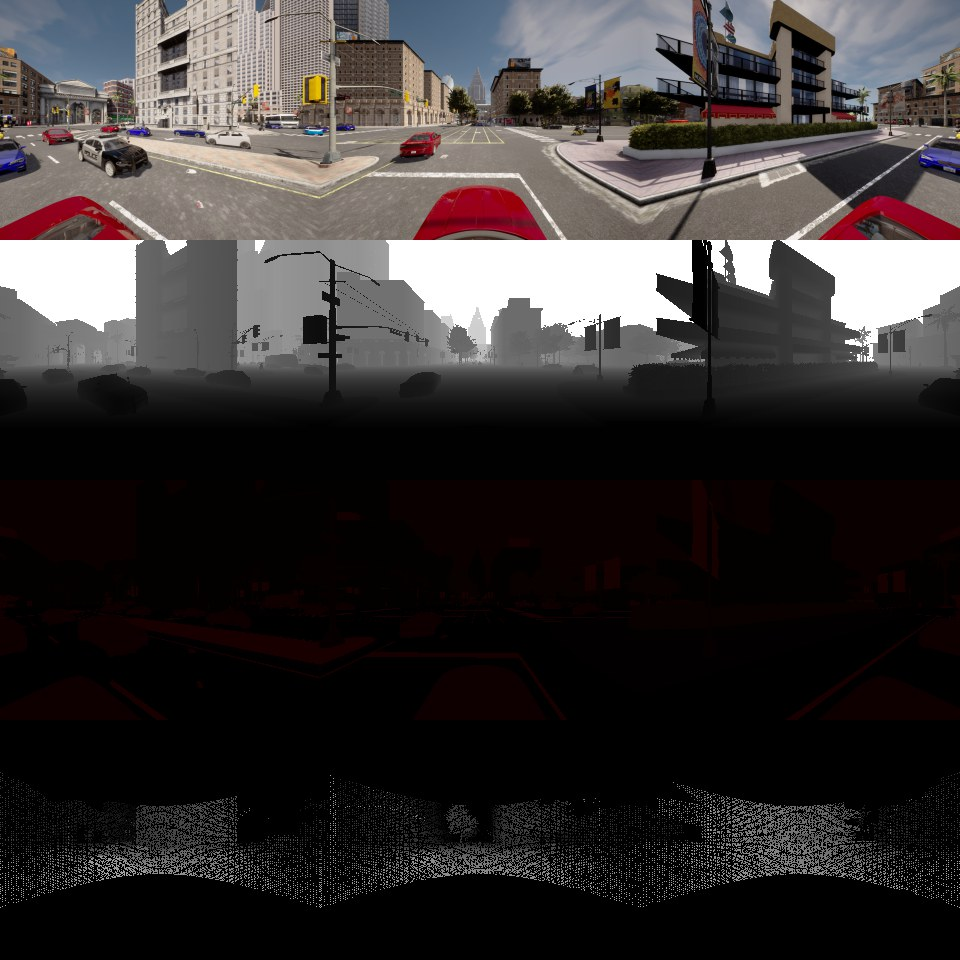
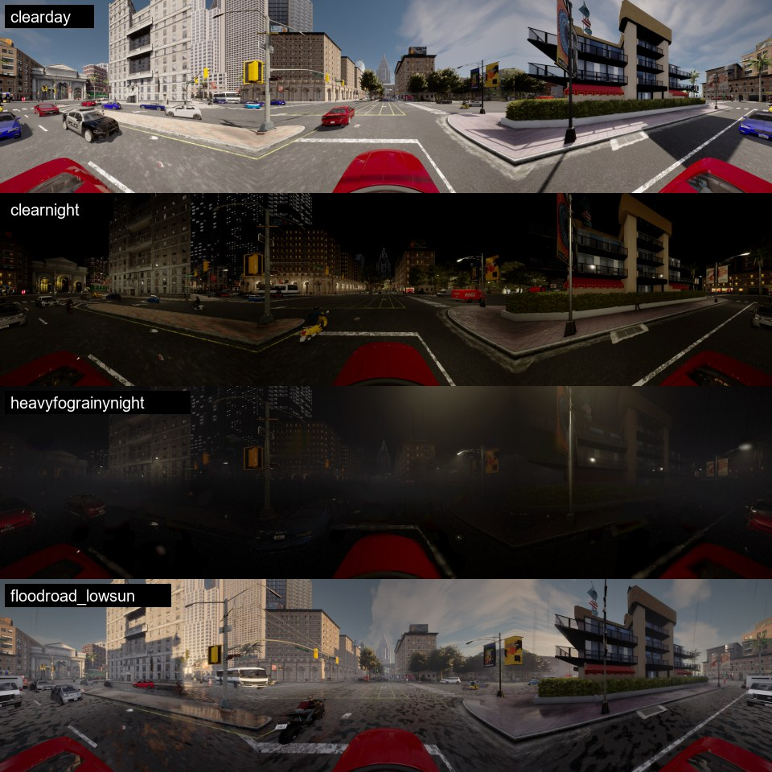

One drive, many kinds of weather: the LANCER driving dataset
A driving agent that learns from reward needs places to practise, and a perception model needs examples of what the road looks like in every kind of light and weather. For LANCER, my postdoctoral project at the University of Ljubljana, we built a small pipeline in the CARLA driving simulator that produces both. It drives one car along one route again and again, changing only the weather, and saves what the car's sensors see. The code, the settings and a set of sample frames are on the LANCER page.
What one frame holds
The ego vehicle is a Dodge Charger 2020. It follows a fixed route through the simulated city while traffic and pedestrians move around it. On its roof sit sensors that look in three directions: left at -120 degrees, forward and right at +120 degrees. At every capture the pipeline saves one 960 by 960 pixel picture that holds a grid of four rows and three columns. The top row is RGB, the second is depth, the third is semantic segmentation, where each pixel is labelled with the kind of thing it shows. The bottom row is LiDAR, a cloud of laser points seen from the roof, projected onto the three camera views. The brightness of a LiDAR point tells how far it is, with close points bright and far points dark.

The sensors are set as in the table. Depth is stored on a logarithmic scale, and the class of each pixel in the segmentation view sits in the red channel, coloured with the CityScapes palette.
| Sensor | CARLA blueprint | Configuration |
|---|---|---|
| LiDAR (one) | sensor.lidar.ray_cast | 64 channels, 500 k points/s, 100 m range, ±20° vertical field of view; projected onto all three camera planes |
| RGB camera (three) | sensor.camera.rgb | 1280 × 960 (4× oversample), 120° field of view; downsampled to 320 × 240; lens flare, motion blur and chromatic aberration on |
| Depth camera (three) | sensor.camera.depth | 320 × 240, 120° field of view; log-depth encoding |
| Semantic segmentation (three) | sensor.camera.semantic_segmentation | 320 × 240, 120° field of view; class label in the red channel; CityScapes palette |
Same road, different weather
The weather lives in a small file, WEATHER_PRESETS.csv. Each row gives a preset a name and a value for CARLA's weather settings: cloudiness, fog density and distance, road wetness, puddles, rain, wind, the height and direction of the sun, dust and the scattering of light. The pipeline reads the rows one by one, reloads the world for each and repeats the drive. The sample set that ships with the code holds 19 conditions with two frames each, from clear day and clear night through low sun, dusk, wet and flooded roads, heavy rain and several kinds of fog, up to a foggy rainy night.

| Preset | Cloudiness | Fog density | Wetness | Precipitation | Sun altitude (°) |
|---|---|---|---|---|---|
| clearday | 5.0 | 1.0 | 0.0 | 0.0 | 60.0 |
| clearnight | 5.0 | 1.0 | 0.0 | 0.0 | -90.0 |
| dusk_withlights | 5.0 | 1.0 | 0.0 | 0.0 | -1.0 |
| lowsun_with_fog | 5.0 | 10.0 | 0.0 | 0.0 | 15.0 |
| wetroad | 20.0 | 5.0 | 90.0 | 25.0 | 60.0 |
| heavy_rain | 20.0 | 5.0 | 90.0 | 100.0 | 60.0 |
| heavyfog | 10.0 | 30.0 | 90.0 | 10.0 | 60.0 |
| heavyfograinynight | 10.0 | 30.0 | 100.0 | 100.0 | -90.0 |
A negative sun altitude puts the sun below the horizon, which is how the night presets are made. The scales run from 0 to 100 for clouds, fog, wetness and rain.
Traffic and pedestrians
The scene is not empty. The pipeline spawns up to 200 pedestrians, who are given a new random destination when they arrive and are replaced if they die, so the crowd stays about the same size. Other vehicles are drawn from a second file, VEHICLE_PROBABILITIES.csv, which lists the CARLA models in four categories: two-wheelers, passenger cars, utility vehicles and sports cars. The mix between categories is fixed in the code at 30% two-wheelers, 50% passenger cars, 12% utility vehicles and 8% sports cars, and the file sets how the models share each category.
Running it
You need a CARLA server version 0.9.14 or newer on the default port and Python 3.8 or newer. Running python collect_data.py in the carla-data-api folder takes two frames per weather preset, 20 simulation steps apart, across the first six presets. The simulation runs in synchronous mode at 10 steps per second, so 20 steps are about two seconds. Both numbers can be changed in generate_dataset, and a single weather run can be started on its own with run_simulation. A run stops early if the car comes within 5 metres of the second to last waypoint of its route.
Discussion
This is a tool and a sample, not a benchmark, so there are no accuracy figures to report. The sample has two frames per condition, which is enough to look at but not to train on, and the dataset you get is as large as the run you ask for. All frames come from one route and one vehicle. The LiDAR row is a projection onto flat views, not the raw point cloud.
What it gives the project is a controlled way to vary the conditions. The same drive under 19 weather settings is the kind of changing condition that the research talk lists among the gaps, extreme weather included, and the weather file is a start on the customizable simulation platform that is the first of LANCER's four goals. The next steps are the ones those goals name: more variable conditions, edge-case events and other agents on the road. For the ideas behind them, see the research talk and the student seminar, and for a related question on how far an image filter can stand in for real weather, the post-hoc corruptions paper.
Sources
The figures and tables listed here are taken from the dataset cited at the top of this page; the numbers quoted in the text come from it too.
- Figures: Sample frame clearday/frame_0.png of the dataset, Sample frames clearday, clearnight, heavyfograinynight and floodroad_lowsun (frame_0.png) of the dataset
Acknowledgements
LANCER is part of the postdoctoral project of Dr. Swarnendu Ghosh at the University of Ljubljana. It is co-funded by the European Union's Horizon Europe research and innovation programme under the Marie Skłodowska-Curie COFUND Postdoctoral Programme, grant agreement No. 101081355 (SMASH), and by the Republic of Slovenia and the European Union from the European Regional Development Fund. Views and opinions expressed are those of the author only and do not necessarily reflect those of the European Union or the European Research Executive Agency. Neither the European Union nor the granting authority can be held responsible for them.
Cite the dataset
Swarnendu Ghosh (2026). LANCER CARLA multi-modal driving dataset and data-collection API. LANCER project, dataset and code, CARLA 0.9.14 or newer.
@misc{ghosh2026lancerdataset,
author = {Ghosh, Swarnendu},
title = {{LANCER} {CARLA} multi-modal driving dataset and data-collection {API}},
howpublished = {Dataset and code, LANCER project, University of Ljubljana},
year = {2026},
url = {https://github.com/swa-g/LANCER/tree/main/carla-data-api}
}